学宫研究机构
学宫凡六十所，在中国者二十八，在海外者三十二。高校之室四十二，研究院十五，余为校企合设与孵化之所。主持人、方向与代表之作，具列于下。
清华 ISR Lab
陈建宇的组，研究足式与人形运动控制、具身 VLA，代表工作有 DWL 与视频预测策略 VPP。
清华 TEA Lab
许华哲的组，用强化学习、触觉与视频生成研究机器人操作。
清华 EVAR Lab
高阳的组，用视频预训练与世界模型研究操作泛化，代表工作有 EfficientZero、ViLa。
清华 MARS Lab
赵行的组，研究多模态学习、自动驾驶感知规划与机器人学习，代表工作有 DriveVLM。
清华机器人控制实验室
赵明国的组，研究双足动态行走、腿足机构与类脑运动控制，搭建 THU 系列双足平台。


北大 EPIC Lab
王鹤的组，研究三维视觉、灵巧抓取与具身多模态大模型，代表工作有 DexGraspNet。
PKU-Agibot Lab
董豪与智元共建的联合实验室，发布 AgiBot World 真机操作数据集与开源工具链。

上交 MVIG
卢策吾的组，研究人体姿态、手物交互与机器人操作，发布 AlphaPose。
上交 ScaleLab
杨小康牵头、穆尧负责，研究扩散策略与分层规划，代表工作有 SkillDiffuser。
浙江人形机器人创新中心
宁波与浙大熊蓉团队共建，研发领航者系列人形整机，研究全身运动控制与工程化量产。
南科大 CLEAR
张巍的组，研究腿足机器人控制、水下机器人与自主导航。
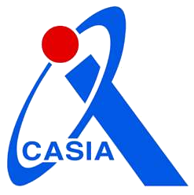
中科院自动化所人形中心
乔红院士领衔，主张用算法「软补硬」弥补国产硬件精度差距，研究类脑机器人与人形操作。
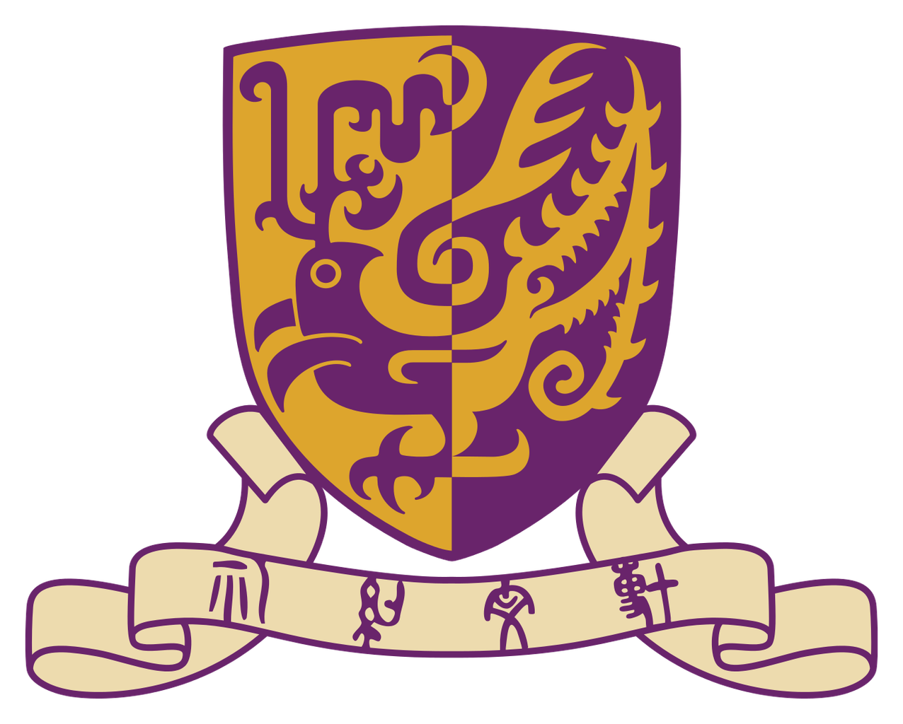
港中文天石机器人研究所
刘云辉领衔，研究视觉伺服、手术机器人与物流机器人，参与香港物流机器人中心（InnoHK）。
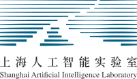
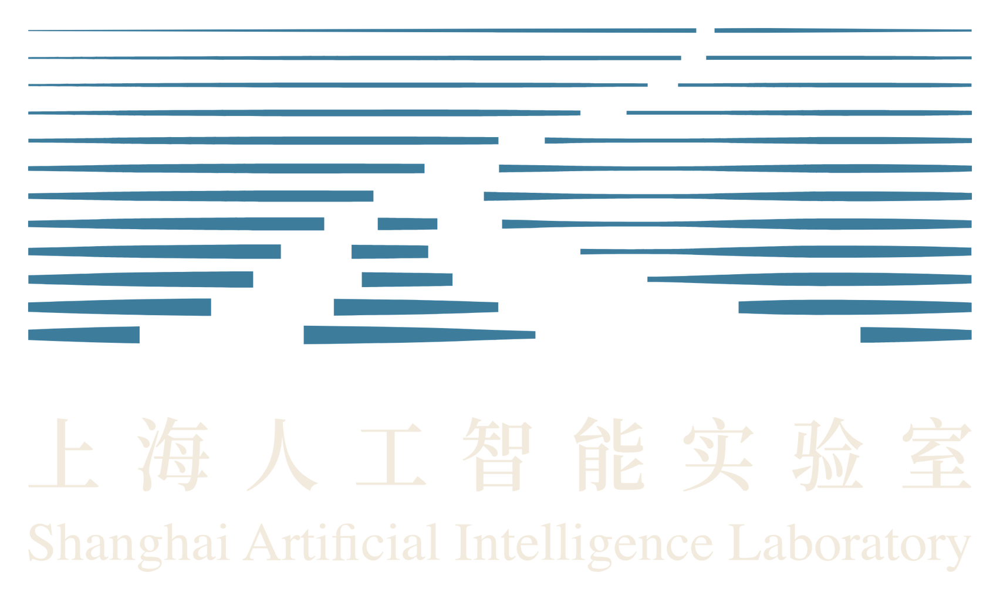
上海人工智能实验室
上海市支持建设的新型研发机构，开源 InternLM 与 OpenXLab，建设具身仿真与评测平台。
北京通用人工智能研究院
朱松纯领衔的新型研发机构，从认知架构研究通用人工智能，提出 CUV 架构与通用智能评测体系。
复旦可信具身智能研究院
复旦大学设立，研究具身基础模型、数据引擎、本体研制与可信机制，开设《具身智能引论》课程。
哈工大机器人技术与系统国重
哈工大的机器人国家重点实验室，研究空间机械臂、腹腔微创手术机器人与仿生微纳机器人。
北航具身智能机器人研究院
北航校属研究院，研究灵巧操作与人形本体；院长魏洪兴兼任遨博智能董事长。

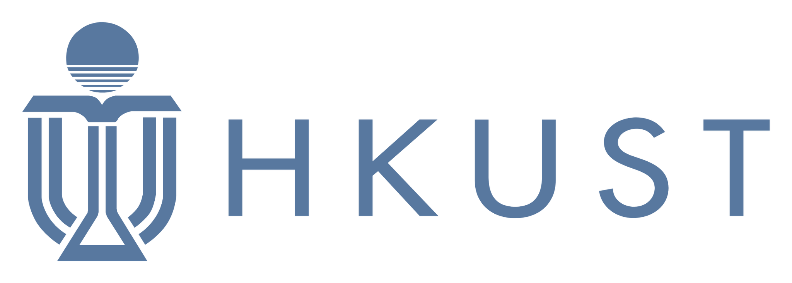
港科大 ARGLab
沈劭劼的组，研究无人机自主导航与状态估计，开源 VINS-Mono 与 VINS-Fusion。
松山湖 XbotPark
李泽湘团队在东莞松山湖发起的硬科技孵化平台，公开案例有大疆、云鲸、海柔创新。
西湖 MiLAB
王东林的组，自研四足机器人整机，研究强化学习与传统控制结合的地形适应。
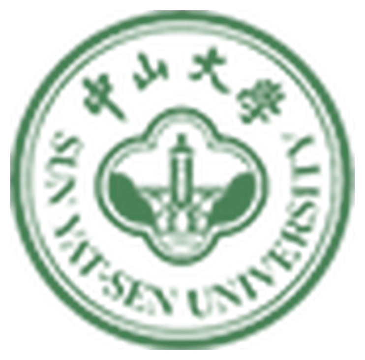
中大 HCP Lab
林倞的组，研究多模态感知、具身自主决策与数字人生成；林倞曾任商汤研究院执行院长。
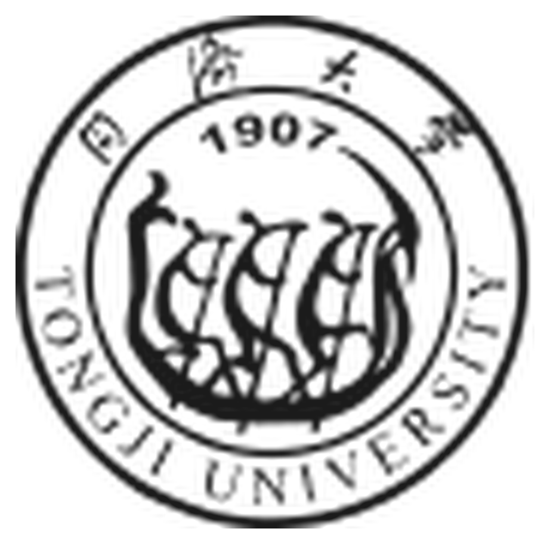
同济空间智能团队
申恒涛带队，研究空间智能与世界模型，发布「无界」世界模型与 BLM 系列。

Stanford SVL
李飞飞等人的实验室，研究视觉与机器人感知，代表工作有 ImageNet、BEHAVIOR。
Stanford REAL
Shuran Song 的组，研究机器人操作与视觉运动策略。
Stanford IRIS
Chelsea Finn 的组，研究元学习、模仿学习与通用机器人策略，代表工作有 MAML、ALOHA。
Berkeley RAIL
Sergey Levine 的组，研究深度强化学习、离线强化学习与 VLA，发布 BridgeData V2。
MIT CSAIL
MIT 的计算机科学与人工智能实验室，机器人方向含软体抓取、GelSight 视触觉与运动规划。
MIT Improbable AI Lab
Pulkit Agrawal 的组，研究机器人在真实物理环境中的学习与适应。

CMU Robotics Institute
卡内基梅隆大学机器人研究所，研究操作抓取、自动驾驶与野外机器人，代表工作有 Boss 自动驾驶系统。

UT Austin RPL
Yuke Zhu 的组，研究模仿学习、物体中心表征与人形操作，发布 LIBERO、RoboCasa 基准。
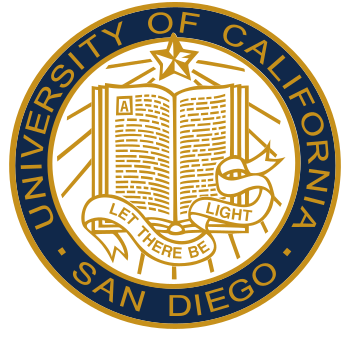
UCSD SU Lab
苏昊的组，研究三维深度学习与操作仿真，发布 SAPIEN、ManiSkill 与 PartNet。
UPenn GRASP
宾夕法尼亚大学机器人实验室，研究多机器人系统、四旋翼敏捷飞行与腿足控制。
ETH RSL
Marco Hutter 的组，研发 ANYmal 四足平台与强化学习运动控制，分拆出 ANYbotics。

EPFL LASA
Aude Billard 的组，用动力系统方法做示教学习，研究人机协作与灵巧操作。
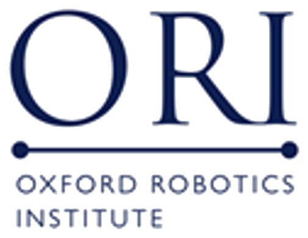
Oxford Robotics Institute
牛津大学机器人研究所，发布 Oxford RobotCar 数据集，研究野外导航与长期定位。
Cambridge BIRL
Fumiya Iida 的组，从生物运动机理提取设计原理，研究软体驱动与机器人快速制造。
Imperial Dyson Robotics Lab
Andrew Davison 领衔、戴森出资的实验室，研究实时稠密 SLAM。
TU Delft CoR
Jens Kober 的组，研究交互式模仿学习，把人类示教作为持续反馈接入技能学习。
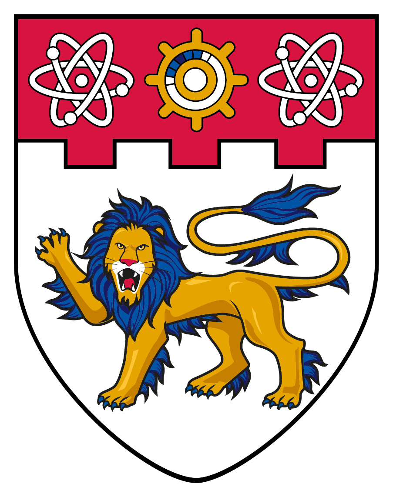
NTU MARS
Jianfei Yang 的组，研究多模态感知、触觉与物理 AI，与珞石共建联合创新中心。
NUS 先进机器人中心
NUS 的跨院系机器人中心，研究服务与医疗康复机器人、人机交互与自主导航。
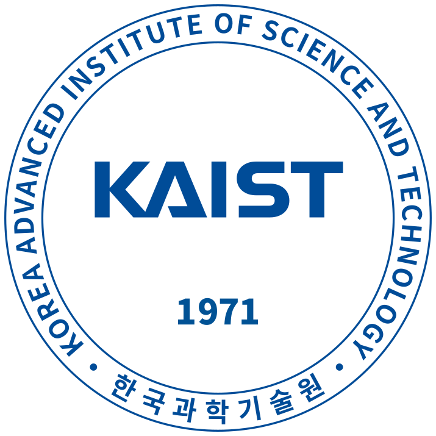
KAIST HUBO Lab
吴俊昊的组，研发 HUBO 系列人形，DRC-HUBO 赢得 2015 年 DARPA 机器人挑战赛。
东京大学 JSK
东京大学机器人实验室，研究人形全身操作与腱驱动肌肉骨骼人形，平台有 Kengoro、Musashi。
东大松尾研究室
松尾丰的组，研究深度学习与基础模型、机器人学习，并承担日本深度学习人才培养项目。
早稻田 HRI
高西淳夫的组，研发 WABIAN 双足人形与 Waseda Talker，延续加藤一郎的 WABOT 研究。
QUT 机器人中心
昆士兰科技大学机器人中心，研究农业与野外机器人、视觉定位，承接澳洲机器人视觉卓越中心的工作。
Google DeepMind
后训练出 RT-2、Gemini Robotics 与 Genie 世界模型；RoboArena、RoboCasa 由其团队发起。
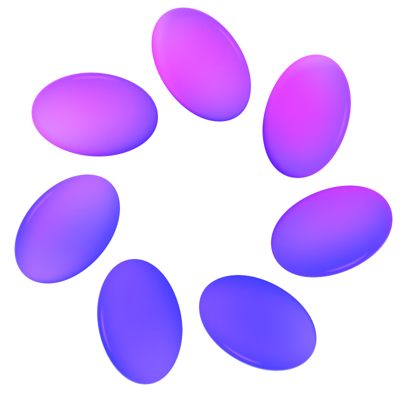
Meta AI（FAIR）
FAIR 的具身研究线：V-JEPA 2 世界模型、Ego4D 第一视角数据集，以及与 Figure 之外的多家机器人公司的合作。
微软研究院
微软研究院在具身方向产出 Magma、villa-X 等可输出机器人动作的多模态模型。
Hugging Face
维护 LeRobot 开源机器人栈与 SmolVLA，并托管 Open X-Embodiment 等数据集。

北京智源人工智能研究院
王仲远主持，做 RoboBrain 具身大模型与 RoboOS 跨本体协作框架，并办具身智能赛事。


阿里巴巴达摩院
做 WorldVLA、RynnVLA 系列 VLA 与世界模型；用人类演示视频补机器人数据。
北京大学
北京大学在具身方向以王鹤的 EPIC Lab 为代表，做三维视觉、灵巧抓取与具身基础模型。
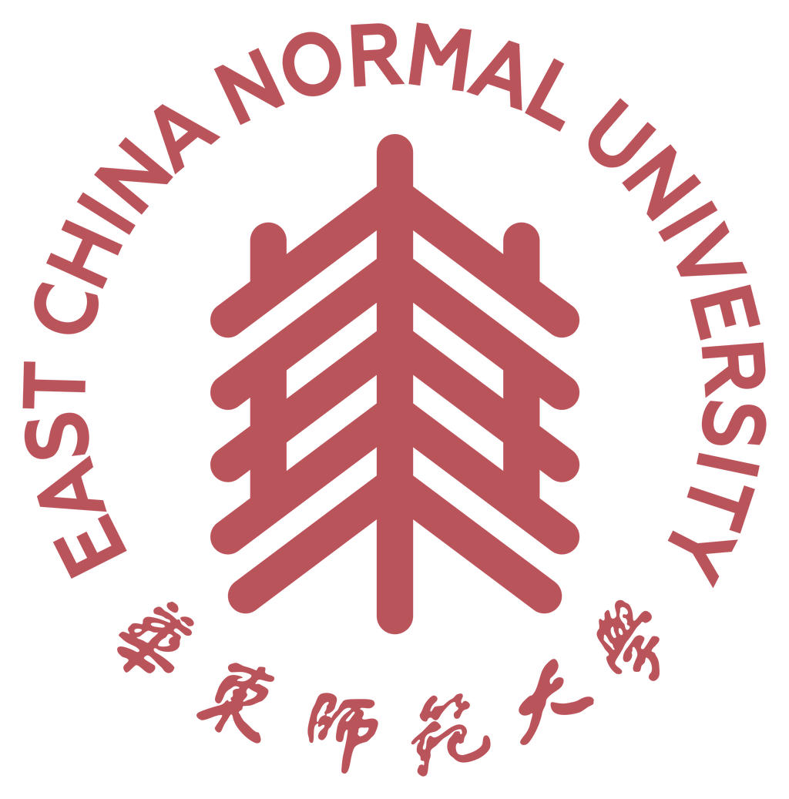
华东师范大学
华东师范大学在具身方向以 TinyVLA 等轻量视觉语言动作模型为代表，研究小模型的数据效率。
EmbodiedCity
李勇团队的城市级具身基准，在仿真城市里评测智能体的规划、导航与执行。


哥伦比亚大学
哥伦比亚大学的具身研究团队；收录其 2 个模型（Diffusion Policy、CoW）。
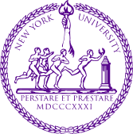

纽约大学
纽约大学的具身研究团队；收录其 1 个模型（VINN）。
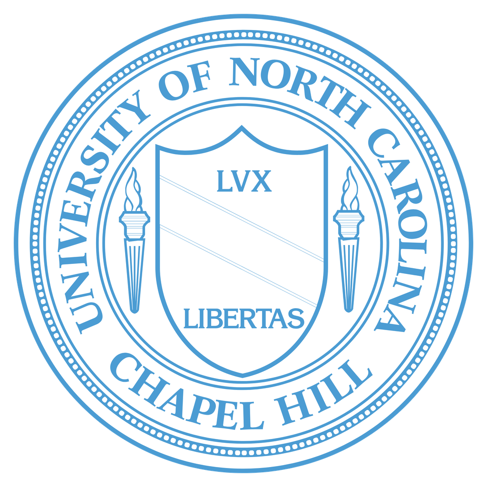
北卡罗来纳大学教堂山分校
北卡罗来纳大学教堂山分校的具身研究团队；收录其 2 个模型（ExBody、ExBody2）。
多伦多大学
多伦多大学的具身研究团队；收录其 1 个模型（Consistency Policy）。
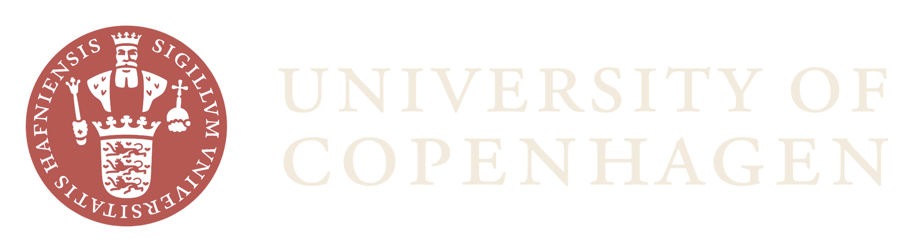
哥本哈根大学
哥本哈根大学的具身研究团队；收录其 1 个模型（TD-MPC2）。
此类未收。